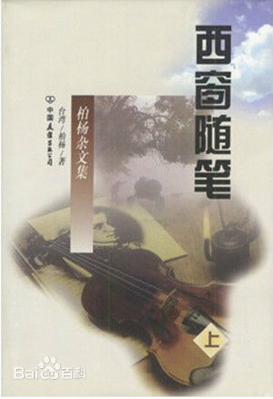

穷是致命伤
穷是男人的致命伤，一个穷小子，想讨一个普普通通的老婆，比上吊都难，至于进一步想讨如花似玉，那更是乱做春梦。但穷艺术家、穷作家，却往往能娶到一位，神恩浩荡，不服气不行也。也就是说，穷并不是不可救药，穷而有两下子，照样有辉煌前程。盖天下女人，在某一个角度上，似乎可以分为三型，一曰见钱眼开型，一曰艺术气质型，一曰不求甚解型。
见钱眼开，固然很多是先天的，但大多数都是后天的培养。一个小女人，活着活着，忽然发现了银子这玩艺，真是绝妙之物。柏杨先生家乡有句俗话云：「钱是活宝，花到哪里，哪里好。」只要有了钱，想汽车就坐汽车，想去美国就美国，想看忠贞嘴脸就有忠贞嘴脸，想听赞扬她德配天地，才色兼俱，就有人赞扬她德配天地，才色兼俱。而最大的舒服还是，只要有钱，就自然而然的产生摇尾系统，追随左右，无论走到哪里，有在前打头站的，有在后押阵脚的，有在眼前屁后陪笑承欢的，真能使她飘飘欲仙。呜呼，嫁给一个穷小子，连电风扇都买不起，而嫁给一个百万富翁，只要把钞票往窗子上一丢，就会冒出一个冷气机。嫁给一个穷小子，天天吃白水炖豆腐，而嫁给一个富翁，照样把钞票往桌上一丢，就也照样冒出一席山珍海味。一旦有此发现。于是乎她就立刻变成了天鹅肉，而穷小子也就立刻变成了癞虾蟆。
穷小子常常有一种观念，认为凡是百万富翁，都铁定的脑满肠肥，庸俗不堪。过去的土财主，和用不尊严手段达到尊严地位的人，固然低级的多，高级的少。但社会逐渐进步，正当的企业家和正当的商人，却往往也有高尚的情操和情趣。君读过《卡尼基传》乎，当时美国和智利之间，情势紧张，眼看就要开战，卡尼基先生劝总统忍耐，总统是谁，已忘记矣，当时就大怒曰：「你阁下是个商人，只知道商业利益，不知道国家尊严？」卡尼基先生曰：「总统先生，那你就错啦，我经营的钢铁工业，一旦开战，只有发财。」工商业越发展，这种富翁也将越多，这种富翁越多，国家也就越富越强。
其实即令所有的百万富翁都十分庸俗不堪，听他三句话都能使人闭气而亡，也没关系。盖一个见钱眼开型，她本身也绝不会雅到哪里去也。幸福的婚姻建筑在两个人的价值标准相同上，价值标准相同，看法和感受才能一致。一个百万富翁献上了女儿而弄了一笔钱，他太太如果是一个艺术气质型，恐怕不会赞成，至少她会瞧他不起。但他太太如果是一个见钱眼开，那就不一样啦，准夸奖他手段高明。嗟夫，见钱眼开型是上帝特别为百万富翁或俗不可耐储备的女人。只有他们配在一起，才能快乐。
艺术气质型则恰恰相反，这不是说这一型的太太小姐都是仙女下凡，对世俗的享受毫不在乎。普天之下，包括孔丘先生以及柏杨先生在内，恐怕没有一个人不是有汽车就不坐鸡公车，能吃肉就不吃糠的也。但她们对钱的要求却是适可而止，犹如见钱眼开型的太太小姐，对性灵的要求也是适可而止一样。见钱眼开的太太小姐事实上并不一定连毛孔都俗不可耐，不过，她们对性灵的追求和吸收，有一定的极限，一旦性灵和钱摆到眼前要她选择，她就只看见钱矣。所以一百个前途辉煌，才华四溢的画家焉、作家焉、音乐家焉，纵然再加上一千斤沉香没药，也抵不上一个在纽约开茶馆不识之无的大肚子老板。
同样道理，艺术气质较重的太太小姐，她有她的境界，到美国去落户生子，当然求之不得，但该丈夫必须是个学者专家，风流潇洒之类，才能对劲，即便稍微穷一点，也没有太大关系。否则的话，就是嫁给了该茶馆大肚子老板，连茶盃都是用美钞糊的，她也会觉得缺少点什么。小说也好，真实故事也好，凡是看上了穷叮当小子，硬是非爱之，甚至非嫁之不可的，差不多都属于这类型的女孩。柏杨先生那位世侄，就是在这种际遇之下娶了一位如花似玉的，这就得全凭运气了矣。就在结婚喜筵的那一天，隔壁桌上有几位呆头鹅，在那里唉声叹气，其中一位忽然问其邻座曰：「你跟林小姐泡了四五年啦，从她高中毕业一直泡到大学堂，啥时吃你的喜酒？」邻座茫然曰：「不知道。」问话的人曰：「胡说胡说，怎能不知道。」邻座曰：「确实不知道。」原来该邻座是一位音乐硕士──在某学堂任教，在音乐界颇有点名气，他有一次费了两个月工夫谱出一曲，献给他的女友，该女友拿在玉手之中，眺望了半天，他以为她会欢欣若狂，马上拧他一下，以示感谢哩。谁知道她眺望了半天之后，了了草草塞到皮包里，就要他陪她逛委托行。呜呼，君知道陪女朋友逛委托行的真实意义是啥？那就是说，她要敲他啦，他必须在口袋中装满了钞票，以便她看中了某一种贵得要命之物时，他就满面含笑的买而送之。他阁下一肚子气，再加上时值月尾，正闹饥荒，不愿跟她去，提议去看电影，她就摇摇屁股，走啦。
虽然两桌之间，有相当距离，而我又不认识该小子，但我一听就知道他们的恋爱要砸锅。不过，话又说回来，结不了婚，该小子固然发疯，还算他祖宗有德，如果一旦结了婚，穷艺术家娶了一位见钱眼开，那比娶了一颗原子弹还要糟。不要说爆炸啦，爆炸啦当然要粉身碎骨，不在话下。即令一直没有爆炸，那种放射线也能把他烤得皮破血流，毛发全脱。
什么人配什么人
见钱眼开型女人天生的要嫁给老板经理，和小开富翁，这种婚姻才是百年好合，盖他只要一天有钱，她就服服帖帖。即令若干年后，他的钱光啦，但她也老啦，耍不出新花样。而穷艺术家一旦红鸾星动，结识了见钱眼开，那可是霉运当头。常有些写稿的作家朋友，写起小说也好，散文也好，动不动就冒出来一位美艳绝伦的女士，两人一旦交谈，互通了尊名大姓，该女士一定尖叫曰：「原来你就是谁谁谁呀，我常看你的大作呀，写得好，写得妙，我以认识你为荣呀。」作者照例自己谦虚一番，有的还藉机说上一段使读者背皮发紧的话，然后二人就爱上啦，爱得难舍难分。
写这种小说的作家，即令不是头脑简单，也是一厢情愿，认为只要有两篇大作出笼，就会有一打以上的千娇百媚，争着往他怀里跳。呜呼，艺术家固有娶漂亮太太的特权，但这特权要靠上帝的恩典和他自己的真实本领，不是说浮浮飘飘两本小说就能使女孩子心神动摇。不要说别的，只说一点吧，如果遇到的小姐是见钱眼开型，恐怕不要说只写过两本啦，就是写过两箩筐都没有用。唯英雄惜英雄，惟惺惺惜惺惺，唯艺术气质的女孩子，才有爱上艺术家的可能性。
艺术气质，是一种不图近利的气质，而见钱眼开则是一种短视眼，别看她美目盼兮，巧笑倩兮，却是除了钱啥都看不见。而且只看见眼皮底下的钱，连三公尺外的钱都看不见，深信只有钱才是万能。艺术气质型不同的是，认为「才」才是万能，基本观念既然不一样，恋爱也好，婚姻也好，就也不一样。
《聊斋》上有一文，曰〈姐妹易嫁〉，为这两型的女孩子描绘出两种脸谱。书上曰：毛先生者，山东掖县人，官做到宰相之职。而他小的时候，父亲却是一个放牛的，穷得一清二白。同县有一位张先生，乃当地百万富翁，看他聪明可爱，前途不可限量，就把他收留在家里读书，当作子女一样看待。又把长女许配给他为妻，毛先生的母亲一听，百万富翁的女儿要下嫁给她的儿子，当时就吓了一跳，这一跳我想是难免的，盖贫富相差太远啦。
问题就出在长女身上，她听说把她许配给一个放牛的儿子，禁不住羞愧难当，气冲斗牛。偶尔有人向她提及她的婆家，她就把耳朵一掩，号曰：「我宁死也不嫁那穷光蛋。」等到结婚那天，毛先生兴兴头头，前来迎娶，在客厅里恭候，可是新娘坐在墙角却一味猛哭，连妆都不化，更别说上轿啦。
大小姐越是痛哭流涕，如丧考妣，被「如丧」的两位考妣，越是急得抽筋。执事进来传话，新郎要告辞啦，告辞啦者，就是催新娘快点上轿。老头连忙出来，扯谎曰：「小女正在梳妆，请稍停稍停。」扯罢尊谎，又回来规劝女儿。呜呼，这真是一个伟大场面，写在书上，还没啥热闹，如果搬到电影上，就热闹矣。百万富翁之家，大喜之日，张灯结彩，车马盈门，人声喧腾，穷新郎战战兢兢，枯坐在客厅之中，左等右等，不见新娘上轿。不要说有人向他咬耳朵传情报矣，就是察颜观色，也会看出有点不对劲。而新娘身为大学堂毕业生，天天盼望去菲律宾嫁给华侨，如今被老头异想天开，逼着嫁给一个其穷无比的小子，那股委屈之劲，足够使观众落泪矣。该老头自找烦恼，惹火上身，一会跑到新郎那里，叫曰：「我女儿正在描眉，马上就好啦。」一会儿跑到新娘那里，叫曰：「乖女儿，那小子目前虽贫，但将来前途无穷，为父的岂能坑你。」跳跃之状，不忍卒睹。
可是无论怎样拖延，新娘不上轿总无法结束这个镜头。老头情急，一迭连声吩咐用人去买麻绳，要吊死在女儿面前。闹成这种样子，就更下不了台。二女儿看不过去，也去劝她姐姐，劝了些啥话，书上没有交代，不外是说姓毛的那小子有出息，为人不可只看「钱」而不看「才」等等。大小姐一听，好呀，你也逼我往井里跳，瞧我的笑话呀，大怒曰：「他既然那么好，你怎么不嫁他？」二小姐曰：「爸爸当初没有把我许配给他，如果把我许配给他，用不着谁劝，我自然会嫁。」老头一听二女儿之言，灵机一动，就跟她商量，结果由她代替姐姐，梳妆上轿。
这个故事最后的结局是八股的，全在意料之中。穷小子后来成了宰相大人，而大小姐嫁了一位百万富翁，后来家破人亡，她阁下只好去尼姑庵里苟延残喘。对于这种结局，我们不以为有其必然性，婚姻不是赌博赛马，找个穷小子押上一注，就一定可押中，盖穷小子不一定将来必富，而百万富翁也不一定将来必穷，即令穷，也不一定穷到尼姑庵也。不过我们要从这故事说明的是，姐妹二人，正是两个极端，大小姐见钱眼开，而二小姐却有艺术气质，在乱七八糟，丢人献宝的浪潮中，毅然挑起重担，仅这一点，普通人就不容易办到。当然，如果二小姐不肯嫁国王时，大小姐准也可挺身而出，「你不嫁我嫁」。但天下不肯嫁穷小子的女人多，不肯嫁国王的女人少也。
择肥而噬
〈姐妹易嫁〉给我们的另一启示是：世界上逼女儿嫁百万富翁的父母，多如牛毛，盖少女们正值绮丽年华，吃喝玩乐，只要向老头老太太一伸玉手就行啦。就是父母不给钱，也会有臭男人勇猛奉献。想当年柏杨先生的令嫒从开始社交文定，一直到结婚大典，就从没有花过一文。我乃知事明理之人，当然不会不给她钱，每次她有约会，我都塞一点碎银子到她荷包里，以备不时之需。可是她简直花不出去，有若干次她表示表示，请那些前呼后拥吃点消夜，可是还没等她动手，小子们已跑到柜台上打架啦。
富贵之家的少女们似乎啥都不缺，独缺爱情，一旦到了「女心向外」之年，简直用铁链都锁不住。普通一点的，唯年轻英俊是视，只要该小子长得帅，会跳舞，会唱歌，在大庭广众中惹人肃然起敬就行。高级一点的则只要能写两篇小说，能说两句英文，她就五体投地，认为别瞧他目前固穷，二十年后，准一条好汉，届时名震世界，莎士比亚先生给他提鞋都不配。可是作父母的却难得有这种想法，盖二十年是一个漫长的日子，到时候莎士比亚给他提鞋都不配，当然很好，万一弄砸了锅，成了他给莎士比亚提鞋都不配的局面，该如何是好乎哉？故远的不如现的，期票不如本票，眼里瞧的不如口袋里装的，文化人──尤其是尚未成名的文化人，遂不值一个屁；「有经济基础的人」，才是上等女婿。君看过《梵谷传》乎？梵谷先生向老头求婚，老头整人为快乐之本，曰：「你把你的手指烧掉，我女儿就嫁你。」梵谷先生一听，烧掉就烧掉，当场就烧，烧得皮肉嗤嗤，双目流泪，可是老头仍不答应，不答应固然可以说老头心狠如狼，但普天之下，大多数老头老太太都是见钱眼开的。即以柏杨先生而论，道德学问，真没啥可说，可是我选女婿时，就是只看他的金银财宝。我的小女儿在美国第一次恋爱，对象是个学文史的，也就是现在大专联考乙组那类小子，我连夜打出长途电话，严厉禁止。呜呼，她如果嫁给一个作家，每月怎能给我两老寄三百元美金乎；现任女婿乃一洋大人，在波城绿意斯镇开五金杂货店，小女儿只要顺手牵一把锅铲寄来，就够我吃一个月矣。
说了这么多，只是说父母往往逼女儿嫁百万富翁，而女儿往往坚持嫁穷小子，这当然不是全体如此，有些千金小姐身上天生的流着见钱眼开的血液，跟老头老太太的意见不谋而合，择肥而噬，不但一团和气，也一帆风顺。不过一旦女儿是艺术气质型，就不得不热闹起来，掀起家庭革命。夫家庭革命者，一句话可说完，那就是，艺术气质型反抗见钱眼开型。这种革命是常见的，只有〈姐妹易嫁〉这种革命，却是见钱眼开型反抗艺术气质型，乃属绝对少数。老头老太太竟然主张放长线约大鱼，女儿却认为穷小子不可靠。世界之大，可谓无奇不有。不过这种场面，如凤毛麟角，不是女儿凤毛麟角，而是老头老太太凤毛麟角。
心理学家把人类分为内向型和外向型，曰内向型如何，曰外向型如何，振振有词，好像言之有物，结果发现人类没有绝对的外向，也没有绝对的内向，大多数都是混合物。在某一种场合，外向两下子，在另一种场合，内向两下子。我们把太太小姐哇啦哇啦乱分，也同样结局，芸芸女士，很少是绝对见钱眼开，也很少是彻头彻尾艺术气质的也。绝对的见钱眼开，其庸其俗，其无心肝，没有人可以忍耐。绝对的艺术气质，也照样糟糕，活在一种不切实际的幻想世界，见解和感情，一辈子都不成熟。娶了一位纯粹艺术气质型，等于娶了一个玻璃娃娃，麻烦可大啦。
大多数太太小姐似乎都不求甚解，马马虎虎，混混沌沌。呜呼，婚姻乃终身大事，尤其对一个女孩子，婚姻好像是再次出生，三分之二的生命交付给一个素昧平生的臭男人手里，真是世界最大的一桩冒险。按说应该小心又小心，慎重又慎重才对，事实上却往往是大而化之的多，左挑右挑，看得准，拿得稳的少。我认识一个女孩子，是我侄女的同学，漂亮得不像话，属于见钱眼开型，这一型的最大困难就是无法教臭男人填具一张资产负债表。只好在他衣食住行的规模上判断，结果嫁了一位半大老头，当初人人都以为他有几文的，结果发现他比柏杨先生还穷，不过场面阔绰罢啦，把她阁下气了个半死。
这困难对艺术气质型小姐也会产生，臭男人的「才」，和他的「钱」一样，也往往无法预先确知，有些「小有才，未闻君子之大道」，或「小时了了，大未必佳」的年轻人，二三十岁时候，看起来前途不可限量。咦，说到这里，特地提醒一点，哪一个没有出息的老头，年轻时不是被人认为「前途不可限量」乎哉？即以柏杨先生而论，弱冠之时，面如美玉，意气高昂，着实风靡三秦，父老皆曰：「此子才华盖众，前途不可卜也。」结果何如，阁下已知，敝前途只不过两公尺就完啦。我是过来人，故对后生小子的前途，实在没有把握。君看过一篇小说乎，名曰〈乔治的书〉，乔治先生是女主角的丈夫，结婚之前，他扬言要写一本全世界都要震动的名着，每个细节都想好啦，只等一结婚就哗啦哗啦动手，女主角听到入神之处，就让他握着她的玉手，然后望着他那前途不可限量的尊脸，玉眼中露着崇拜骄傲的光辉。
结了婚之后，连蜜月都没有度，为的是乔治先生急于要写他的书，女主怀着兴奋的心情，把笔墨纸砚都准备好，然后把丈夫送到书房。该乔治先生一会要咖啡，一会抱怨太太打断了他的灵感，一会这个，一会那个，俨然莎士比亚二世。半个月之后，新娘子数了数稿纸，竟少了三十页，芳心大喜。
芳心大喜
女主角所以芳心大喜，盖依她的判断，那些稿纸一定写得满满的矣，谁晓得事情有点大谬不然，她竟在最底层抽屉里发现了它，不但没有写得满满的，而是连一个字都没有写。原来乔治先生恐怕太太翻他的稿纸，故意弄的玄虚也。这一气非同小可，她就和他大闹，依照常情，该丈夫准满脸通红，无地自容；谁晓得他不但不满脸通红，无地自容，还跳高哩，一面跳高一面吼曰：「你一点都不心疼我，日夜不断逼我写，我难道不能休息一下哉？」娇妻哭丧脸答曰：「你当然可以休息，但你根本没有写呀。」该丈夫急啦。宣称冬天太冷，手脚都僵，等春天时一定写。春天来啦，百花齐放，使人心身都懒。还是等夏天吧，夏天不写就是王八蛋。可是到了夏天，蚊子又多，天气又热，汗流浃背，挂到绞架上都绞不出灵感，想起来还是冬天好。
这篇文章的结局是一段话，女主角叹曰：「到了现在，我们结婚已二十年，他还在天天发誓说，下个月就要写他的书。」
乔治先生当然是经过戏剧化了的人物，不过也正可说明世界上这种臭男人实在太多，多得连小说家都提出了典型。呜呼，青年人最大的毛病是志大而才疏，几个小伙子聚在一起，瞧他们前途光明吧，不一定是瞎吹的，而实在是都怀着强烈的自信。记不得是哪个洋大人写的文章，描写两个穷画家的故事，在房东太太把他们撵走的前夕，两块活宝在房子里大骂该房东太太庸俗恶劣，不知艺术为何物，然后灌了两口黄汤，甲恭维乙是毕加索，乙恭维甲是雷诺尔，甲说他的计画，乙说他的抱负，说到得意之处，好像眼看就要成大名而发大财。这时房东小姐一个人默坐在楼梯上，双手紧握，倾听他们信口雌黄，心跳如捣。一会工夫，其中一个走啦，另一个送客归来，女儿撞上去，把他抱住，吻他，说她相信他将来不得了，要他带她远走高飞，她可以为他洗衣做饭，管家务，整理画架，使他无后顾之忧，而安心作画。艺术家本来已自我沉醉，一听有人如此崇拜，就更信以为真，架子马上端了起来，说他不能娶她，因艺术家都是只过爱情生活，而不过婚姻生活的。他需要自由，有自由才能发挥天才。主要的还是她不漂亮，如果漂亮就好啦。一面说一面向楼下的房东太太开骂，骂她是「巫婆」，只知道钱钱钱钱钱钱钱，不知道他是人才。
这故事似乎颇有教育意义。夫「财」「才」均难发现，看着好像是那么回事，等到嫁了过去，生米煮成熟饭，可能竟不是那么回事。
我想，天下最伤心的莫过于见钱眼开型嫁给一个穷措大，而艺术气质型嫁给一头俗猪。
见钱眼开小姐满心以为嫁的是一位部长兼富翁，出门有汽车，家里有冷气，巴西有橡园，美国有房产，想不到蜜月一过，原来他不但啥都不是，而且还啥都没有。汽车是租车行的，房产固然有，早于五年前就卖啦。一场春梦，化为泡影，忽冬一声，跌到万丈深渊。而艺术气质小姐亦然，她本来以为她的丈夫能成为名作家，名画家，或能成为学人专家，至少也能成为一个博士硕士的。更相信他的气质和见解，不同凡品，两人情投意合，即令过粗茶淡饭日子，也都十分开心。想不到嫁了才三天，竟发现他原来是一个下三滥，照样会痛不欲生。
问题是，严重的程度却不一样，见钱眼开型万一瞎了尊眼，嫁了个穷措大，固然倒楣，但一旦时来运转，说不定仍可发上一笔。只有「才」这玩艺，没有就是没有，一旦把乌鸦当成了凤凰，那才是走入绝路。盖穷措大可能有平地一声雷的一天，而乌鸦却怎么变，都变不成凤凰也。人类的情操都是向上的，守财奴哭他丢了钱，听的人不但不会同情他，恐怕还要大笑一场，以资庆祝。一个如花似玉哭她遇人不淑，恐怕人人都会陪着她落泪，这种错把乌鸦当凤凰的结局，最最惨不忍睹，因其很难挽救，别人也帮不上忙也。
君看过《聊斋》上的〈嘉平公子〉乎？该公子堂堂皇皇，一表人才。有一位漂亮绝伦的小姐，爱他爱得天昏地暗，他当然也爱她爱得天昏地暗。后来虽然发现她竟然是一个女鬼，但仍爱她如故，盖她奇美，一见她就连心都化了也。他回家后，女鬼也跟着他回家。老爹老娘用尽了方法，除了向警察局报案外，还请高僧老道，念经捉妖，搞了个人仰马翻，结果该女鬼连毫毛都没有动，依然故我。
可是，终于那一天来啦，该公子写了一张字条，放到桌上，该纸条白字连篇，「椒」写成「菽」，「姜」写成「江」，「可恨」写成「可浪」。女鬼看见，在背后批曰：「何事可浪，花菽生江，有婿若此，不如为娼。」题罢，化作一阵清风而去。
咦，连高僧老道都木法度，几个白字却能把她轰走，庸俗愚劣之不可耐，稍微有点灵性的人，都受不了也。这是才女们最大的困惑，谢道韫女士的丈夫是王凝之先生，王家是四世纪时中国最最高级的名门，可是王凝之先生却是一个嘉平公子──即令不是嘉平公子，大概差劲得也够瞧啦。谢女士不像那位女鬼，女鬼伤心之余，可以化成一道清风，脱离苦海，谢女士却不得不守着该俗猪一辈子。有一次回娘家，忍不住曰：「想不到天地之间，竟有王凝之这种东西？」呜呼。